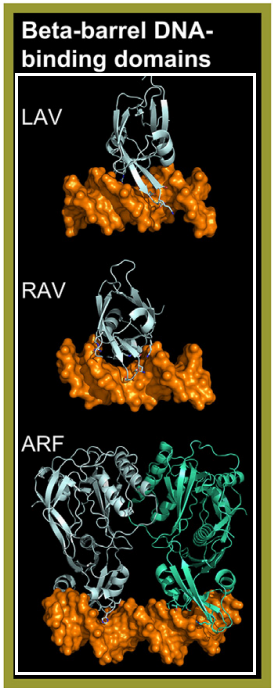

As highlighted by Wingender
[src],
plant-specific B3 domain TF exhibit sequence-specific DNA binding and belong to this superclass.
The B3 domain comprises approximately 110 residues, featuring seven beta-strands and two alpha-helices folded into a pseudo-barrel structure.
Residues in the loops between beta-strands 1–2 and 4–5 directly contact DNA bases in the major groove, enabling each B3 family to recognize distinct sequences
[src]
[src]
[src].
B3 domain TFs are categorized into four families:
ARF and LAV families contain a single B3 domain, while REM family proteins can possess between one and 11 B3 domains [src]. RAV proteins uniquely feature an additional AP2/ERF DNA-binding domain alongside the B3 domain. Most ARF TFs also include a PB1 oligomerization domain [src] [src] [src] and often bind DNA as dimers, with preferences for specific orientations and spacing of ARF binding sites [src] [src] [src] [src]. Unlike other families, studies on VRN1 [src] and REM16 [src] within the REM family suggest that these TFs do not exhibit sequence-specific DNA binding.
